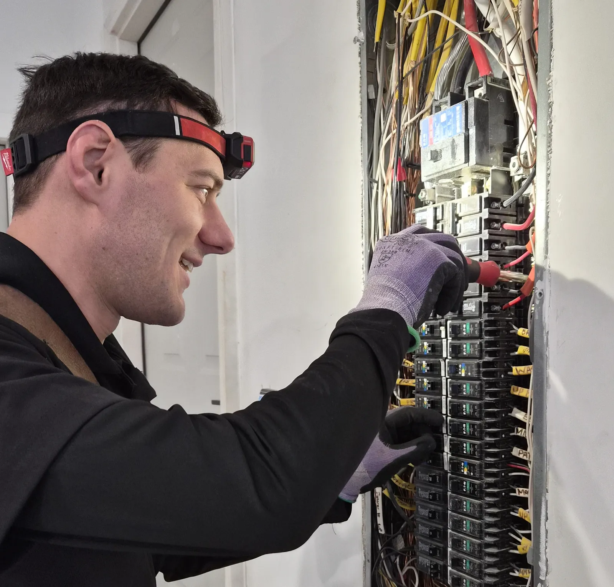

Whole-House Rewiring
for Older Homes
Knob-and-tube, aluminum or ungrounded wiring? We replace it the right way, with the permit, the county inspection and a panel upgrade if you need one. Free quote.
- Licensed & insured
- Permit & inspection handled
- Upfront pricing, no hidden fees
- Locally owned
NC Electrical License #[add license number]
Signs your home needs rewiring
Most homes built before the 1970s were wired for a few lamps and a radio, not today’s kitchens, HVAC and electronics. If any of these sound familiar, it’s time for a look.
Knob-and-tube wiring
Common in homes built before about 1950. No ground wire, brittle insulation, and many insurers won’t cover it.
Aluminum branch wiring
Used in many homes built in the mid 1960s to early 1970s. Connections loosen and overheat over time.
Two-prong outlets
No ground means no protection for you or your electronics, and three-prong adapters don’t fix it.
Fuse box or small panel
A 60 or 100 amp service, or an older panel brand with a poor safety record, often can’t keep up.
Flickering lights & tripping breakers
Lights that dim when something kicks on, or breakers that trip often, point to overloaded or failing circuits.
Warm outlets or a burning smell
Warm switch plates, scorch marks, buzzing or a burning smell are a safety issue. Call right away.
Not sure what’s behind your walls?
We’ll tell you straight.
Call (704) 609-0965
Buying, selling or insuring an older home?
Home inspectors flag old wiring all the time, and insurance companies often refuse or charge more for homes with knob-and-tube, aluminum wiring or certain older panels.
- Clear quote you can share with your buyer, seller or agent
- Permitted work with a county inspection on record
- Paperwork to send your insurance company when the job is done

How a rewire works
You stay in your home. We work room by room and keep the mess to a minimum.
- WalkthroughWe look at your wiring, panel and attic and crawlspace access, and talk about what you need.
- Free quoteYou get a clear price for the whole job before any work starts.
- PermitWe pull the electrical permit with the county.
- RewireNew wire is fished through walls from the attic and crawlspace, with small openings only where needed.
- InspectionThe county inspects the work and we walk you through everything.
Drywall patching: [included / not included]. Typical timeline: [e.g. X to Y days for an average home].

Rewire + panel upgrade, one job
Most older homes that need new wiring also need a new panel. Doing both together means one permit, one inspection and one crew, and leaves room for what’s next.
- Replace fuse boxes and 60 or 100 amp services
- Room for an EV charger, heat pump, hot tub or remodel
- Modern breakers, including GFCI and AFCI protection where code calls for it
- Panel-only upgrades available too
Rewiring homes across Cabarrus, Mecklenburg and nearby
Based in the Concord and Harrisburg area. Call to confirm we cover your street.
- Concord
- Harrisburg
- Kannapolis
- Charlotte
- Midland
- Mount Pleasant
- Locust
- Mint Hill
- Matthews
- University City
- Huntersville
- Cornelius
- Mooresville
What homeowners say
[Real Google review #1, first name and town]
[Real Google review #2, first name and town]
[Before and after photo of a rewire job]
House rewiring FAQ
How do I know if my house needs to be rewired?
Common signs are knob-and-tube or cloth-covered wiring, aluminum branch wiring, two-prong outlets with no ground, a fuse box or small 60 to 100 amp panel, breakers that trip often, flickering lights, and outlets or switch plates that feel warm or smell like burning. Homes built before the 1970s are the most likely to need it. An inspection will tell you for sure.
How much does it cost to rewire a house?
It depends on the size of the home, the number of stories, attic and crawlspace access, how many circuits you need, and whether the panel is upgraded at the same time. We walk the house and give you a free quote before any work starts.
Do I have to move out while my house is rewired?
Usually not. Most families stay in the home. Power is off only to the parts of the house being worked on, and we work room by room to keep things livable.
Will you have to tear out my walls?
No. New wire is fished through the walls from the attic and crawlspace, with small access openings only where they are needed. Most walls are left untouched.
Will my insurance company require me to rewire?
Many insurers will not write or renew a policy on a home with knob-and-tube wiring, and some charge more or ask for repairs when they find aluminum wiring or certain older panels. Rewiring removes the problem and gives you paperwork to show your insurer.
Does rewiring need a permit and inspection?
Yes. A whole-house rewire in North Carolina requires an electrical permit and county inspection. We pull the permit and schedule the inspections with the county.
Should I upgrade my electrical panel at the same time?
Often, yes. If you have a fuse box, a 60 or 100 amp service, or an older panel brand with a poor safety record, doing the panel and the wiring together saves time and a second round of permits, and gives you room for an EV charger, a heat pump or a remodel later.
Can you rewire just part of the house?
Yes. If only some circuits are old or damaged, a partial rewire of a kitchen, a bathroom or one floor can make sense. We will tell you honestly what needs replacing and what can stay.
Get a Free Rewiring Quote
Book online, pick a time that works, and we’ll walk your home and give you a free quote.
Pick a time for a walkthrough. Your request goes straight into our scheduling system.
Book a Free WalkthroughOnline booking by Housecall Pro.